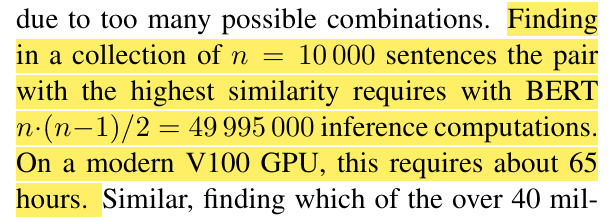
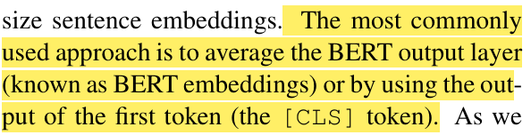
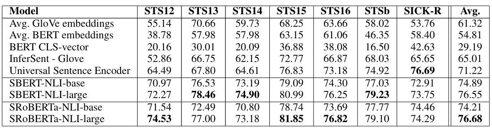
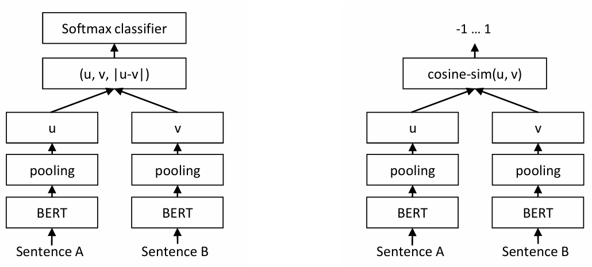
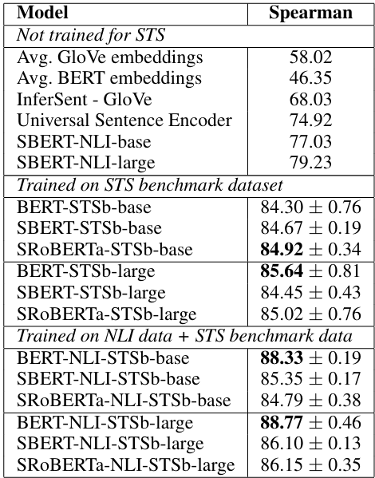
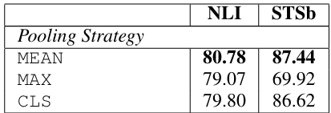
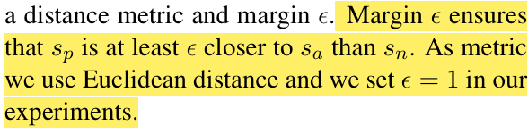

Sentence Bert
提出背景
在文本相似性任务（Semantic Textual Similarity, STS）中，使用Bert进行句子语义信息计算有以下两个问题：
1、需要将两个句子拼接输入网络，此时如果对1w个句子进行两两之间的相似度判别时，需要计算5000w次，花费65小时，计算耗时巨大
2、Bert主要使用两种方式进行语义信息提取：
- 使用
clsToken对应的向量作为句子的平均语义信息 - 使用每个Token的平均向量作为句子的平均语义信息
- 实验结果表明，使用原始Bert进行向量表示在文本相似度任务中效果并不好

Bert主要使用两种方式进行语义信息提取：
- 使用
clsToken对应的向量作为句子的平均语义信息 - 使用每个Token的平均向量作为句子的平均语义信息
- 实验结果表明，使用原始Bert进行向量表示在文本相似度任务中效果并不好


模型结构
SBert的结构包含孪生网络（Siamese Network）和三胞胎网络（Triplet Network）。孪生网络分为双塔，两个塔模型完全相同且共享参数，两个句子通过两个模型计算得到相似度后，再进行梯度反向传播，原论文中，分为两种STS子任务——分类和回归：

- 分类：判断两个句子是否相似，将两个句子以及两个句子的绝对差拼接在一起，输入一个Softmax分类器。至于为什么要采用这种拼接方式，原论文采用的基于实验的经验式方法讨论，在结果上该方案效果最好
- 回归：输出两个句子的余弦相似度，损失函数使用最小均方误差（MSE），输出的值范围在[-1, 1]。文章将SBert与基础的Bert以及Spearman这种Non-Parametric的方法进行对比

对于Pooling层，文章也进行了讨论，分为三种Pooling方式：
- CLS：使用
clsToken作为最终的句子向量进行Pooling - MEAN：使用所有Token的平均值作为最终的句子向量进行Pooling
- MAX：使用所有Token的最大值作为最终的句子向量进行Pooling
- 文章中的实验证明，使用
MEAN的方法进行Pooling效果最好

此外，文章中也提出了一种三胞胎模型，任务为给定句子a，一个正向的句子p，一个负向的句子n，使用Euclidean Distance进行距离评估，模型需要使得p与a的接近程度需要在一定阈值的程度上大于n与a的接近程度，文章中将该阈值设为1

参考资料
- 《Sentence-BERT: Sentence Embeddings using Siamese BERT-Networks》
- 【SentenceBert模型：文本语义去重】 https://www.bilibili.com/video/BV13h4y1a7z6/?share_source=copy_web&vd_source=a7945018d35cf6efabcda5a3ae66fca6
- Sentence-BERT（SBERT）模型介绍及Sentence Transformers库的使用 - Cheer-ego的文章 - 知乎
https://zhuanlan.zhihu.com/p/659682364
本博客所有文章除特别声明外，均采用 CC BY-NC-SA 4.0 许可协议。转载请注明来源 LUVISDRU9！